MAKKMat - Stanford’s TreeHacks Hackathon
February 2015
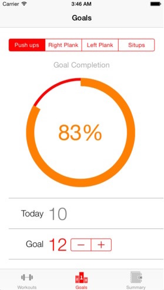
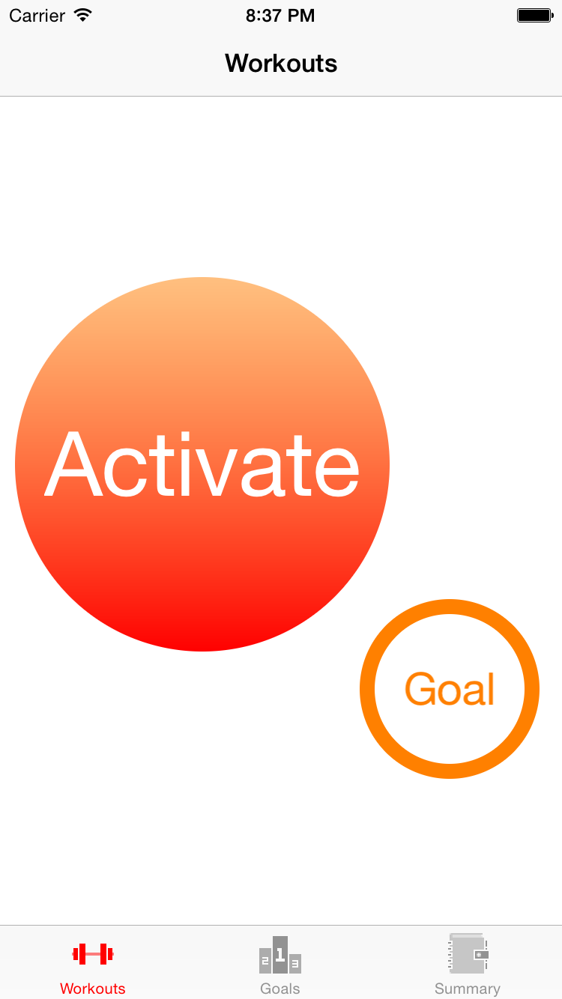
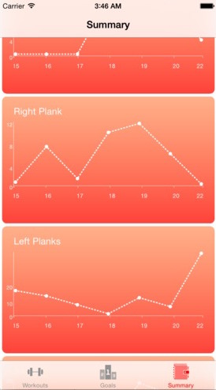
As part of Stanford's TreeHacks 2015 hackathon, Team MAKK (Michael, Adam, Kaitlyn, Kornel) designed and built a “smart” exercise mat and iOS app. This mat can detect what exercise you are doing, track the number of repititions / elapsed time for the given exercise, and then log that data on an iOS device. The hardware used force sensitive resistors and and an arduino Uno with a BLE shield to communicate to an iOS device. This project was completed in 36 hours.
Whiteboard - Microsoft’s USC vs. UCLA Hackathon
January 2015
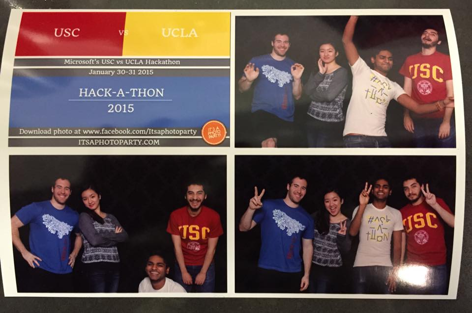
At Microsoft’s USC vs. UCLA hackathon, I teamed up with three computer science students and created Whiteboard, an iOS app to share photos and text and collaborate with friends over a virtual whiteboard. We took the 4th place top honor of the Team Spirit Award out of 70 teams, and were commended for our novel idea and implementation. USC proudly won the competition overall.
USC Mobile App Development Contest February 2015
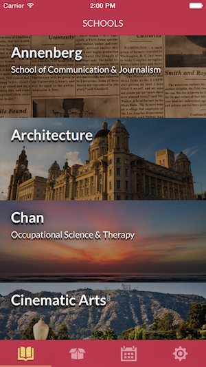
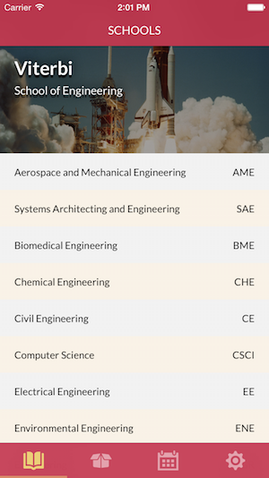
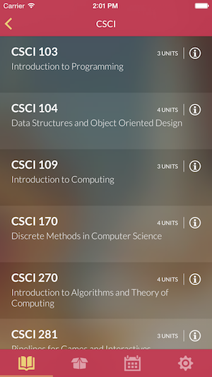
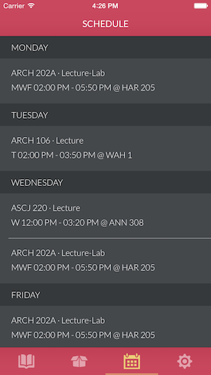
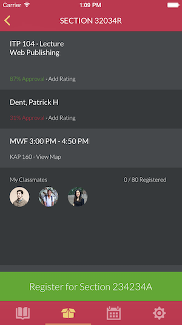
USC held a Mobile App Development contest for students to build mobile apps for the USC web registration system. Our native iOS and Android class registration apps won second place out of seventeen teams, and our team is very excited that USC will incorporate part of our mobile apps for the future official USC registration app.
For this assignment in CSCI 420: Computer Graphics, I Catmull-Rom splines along with OpenGL lighting and texture mapping to create a roller coaster simulation. The program takes in a files containing control points to define some simple splines, and renders the roller coaster accordingly. The ground, sky, and roller coaster rails are texture-mapped. The camera moves along the track to give a first-person perspective of riding the roller coaster.
CSCI 420: Ray Tracer
Fall 2014
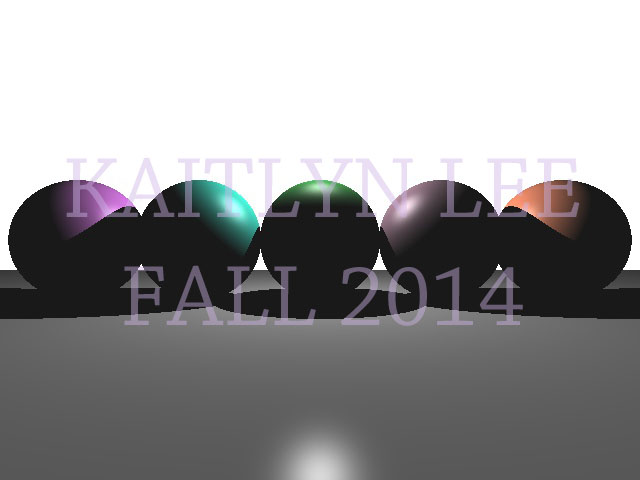
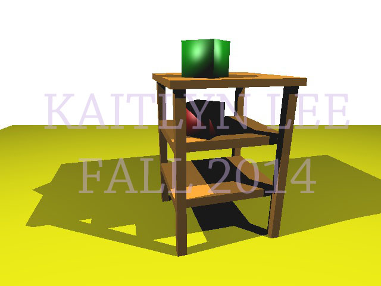
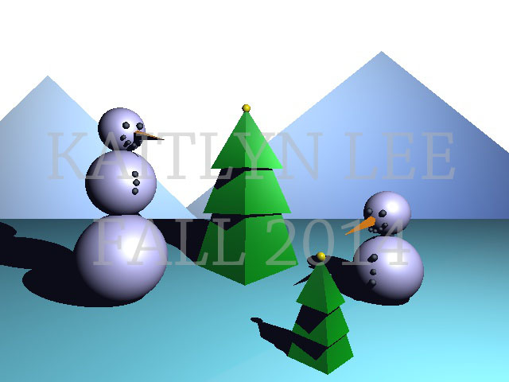
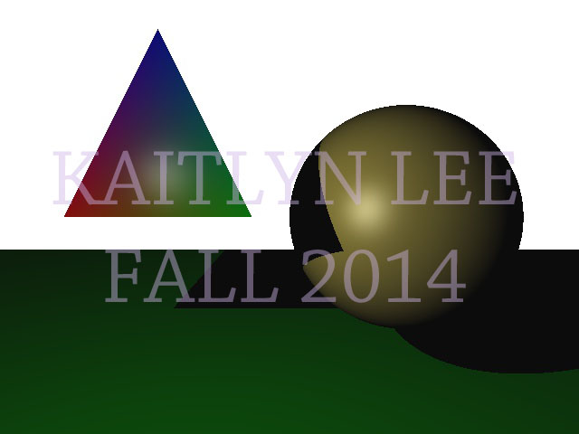
For an assignment in CSCI 420: Computer Graphics, I built a ray tracer that can handle triangle intersection, sphere intersection, and Phong shading for both spheres and triangles. The ray tracer can even handle opaque surfaces with lighting and shadows rays.
CSCI 445: Robotics Final Project
Fall 2014
ITP 415: Foosball 3D Model
Spring 2014
For my final project in ITP 415, 3D Design and Prototyping, I modelled a Frozen-themed foosball table in Autodesk Maya with the players as Olaf the snowman.
CSCI 101: Scribbler Robot and Number Guessing Game
Spring 2013
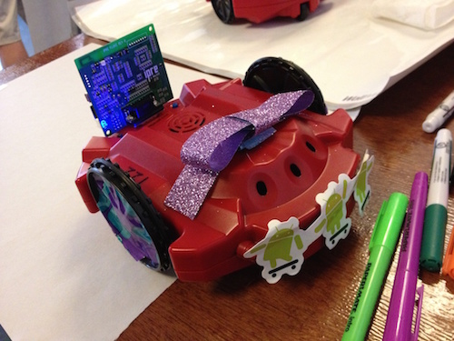
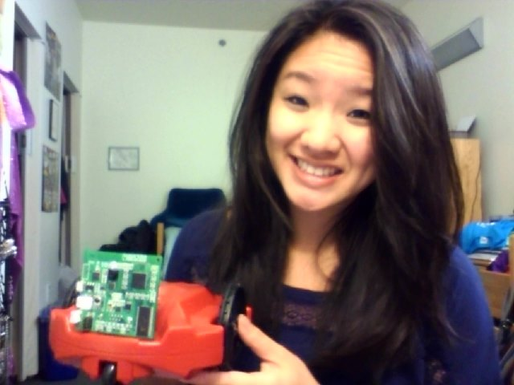
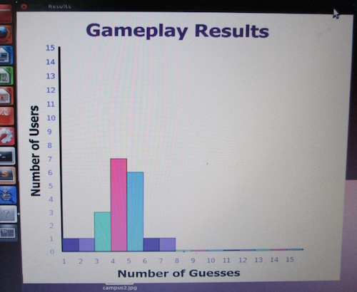
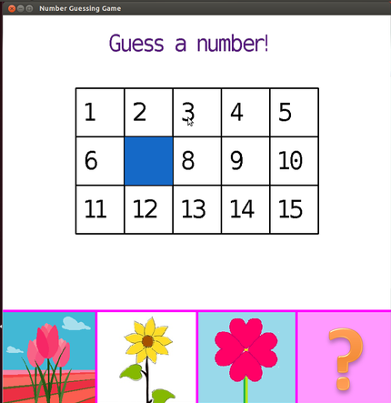
Designed a Scribbler robot demo for middle school students in CSCI101 at USC.
In this 'high-low' number guessing game, program will generate a hidden number and the user will guess a number through the UI within the given range (1 to 15). After the user guesses a number, if the guess is too high the robot will draw a leaf to the right of the flower. If the guess is too low, the robot will draw a leaf to the left of the stem. Once the user guesses the correct number, the robot will draw the head of a flower. There are three flower types to choose from.